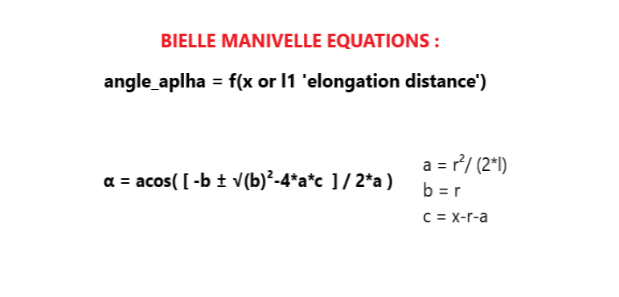

There are two essential parameters in controlling this system :
1 - Angle of support of the object that control (TETHA angle) of the object's projectile motion based on input params (DX/DY/L0/a/b/k/m) .
2 - Angle of manivelle (ALPHA) that controls the distance of elongation 'thread attraction' of this system based of input params (r,l,n,l1/DL) .
I - Modelization
1 - Smart Slingshot
INPUT params : DX/DY/L0/a/b/k/m
OUTPUT params : TETHA angle = .. / Vi = ..
2 - Bielle manivelle system
INPUT params : r/l/n/l1_DL
OUTPUT_params : ALPHA angle = ...
3 - Explanatory images of the system

4 - System Equations
Based on projectile motion equations and newton's law :

II - Realisation & Implementation
1 - Software Implementation
1.1 - Automated Testing Software
This is a software written in (c & python selenium web driver framework) to test the behavior of your system in the web app simulator before the real world implementation .
a - Tools & Langagues :

b - Demo :

Code Testing SW Link : Code Testing SW Link
1.2 - System parameters Web application
This is a web application written in (html,css,js,php,mysql) to define your system parameters after testing & checking it with the automated testing software .
a - Tools & Langagues :

b - Architecture :
c - Demo :
Code Web App Link : Code Web App Link
1.3 - Embedded system design
This is the embedded system part where i choose the MCU , Sensors & Actuators for my project .
a - Materiels :

b - Demo :

Code Esp32 Link : Code Esp32 Link